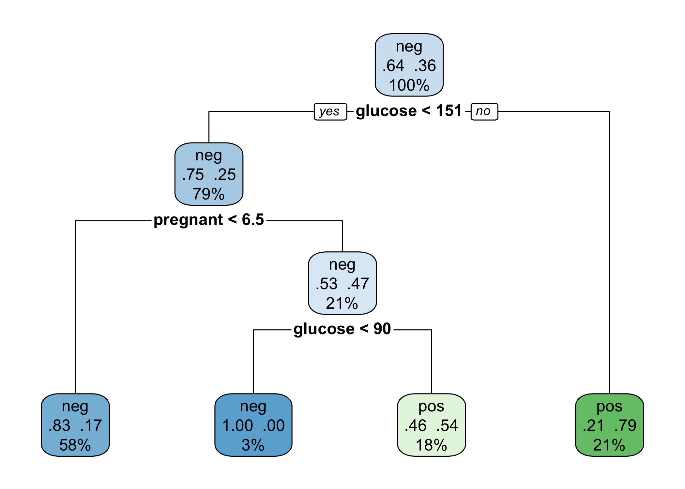
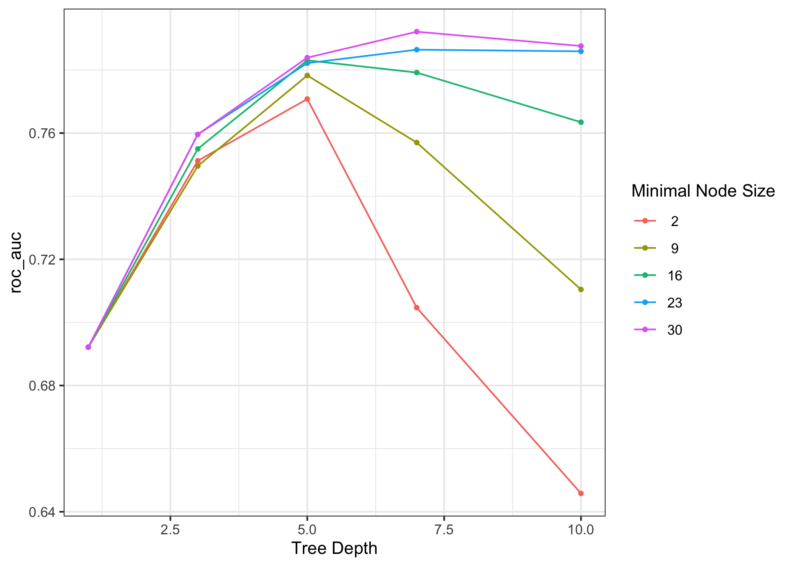
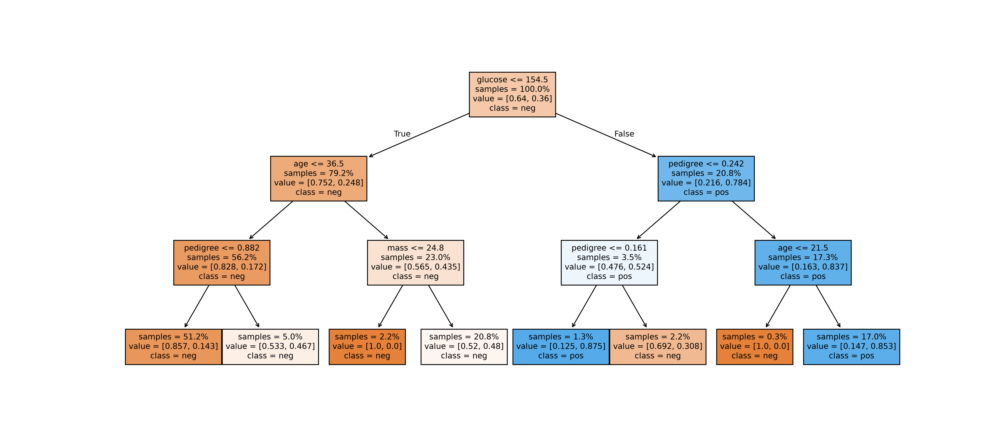

# Packages for this exercise. If one is missing, remove the # and run this line once:
# install.packages(c("tidyverse", "tidymodels", "rpart.plot"))
library(tidyverse)
library(tidymodels)
library(rpart.plot) # to draw a fitted rpart tree
theme_set(theme_bw()) # white background for every plot
options(pillar.sigfig = 3) # show three significant figures in tablesExercise 5.3 — Decision trees, overfitting and tuning
A decision tree predicts by asking yes-or-no questions: is glucose above 128? If so, is body mass above 30? Each answer sends a person down one branch until they reach a leaf, which gives a predicted class and a probability. Trees are easy to read. Their weakness is that a tree can keep splitting until it has memorised the training rows. In this exercise we draw a small tree, watch a large one overfit, and then let a grid search choose how large the tree may grow.
NoteThe plots are for looking at
The code for every plot is folded away just above it, in case you are curious, and all of it is in the notebook linked at the top of each tab. You are not expected to write it yourself.
Download this exercise as an R Markdown notebook (.Rmd): the text and every code cell of the R version, including the code for the plots, with the blanks left for you to fill in. Open it in RStudio and run it a chunk at a time.
Packages and data
The 750 people in data/diabetes_clean.csv, with five predictors: pregnant, glucose, mass, pedigree and age. The outcome has the levels neg then pos. We keep 80% of the people for training (600) and hold back 20% as the test set (150). set.seed(42) makes the split the same every time.
diabetes <- read_csv("data/diabetes_clean.csv") |>
select(pregnant, glucose, mass, pedigree, age, diabetes) |>
mutate(diabetes = factor(diabetes, levels = c("neg", "pos")))
set.seed(42)
split <- initial_split(diabetes, prop = 0.8)
train <- training(split)
test <- testing(split)Part 1 — A small tree
Fit a tree that may ask at most three questions in a row (tree_depth = 3). The formula diabetes ~ . means “use every other column as a predictor”.
tree_spec_small <- decision_tree(tree_depth = 3) |>
set_engine("rpart") |>
set_mode("classification")
tree_fit_small <- workflow() |>
add_model(tree_spec_small) |>
add_formula(diabetes ~ .) |>
fit(data = train)Code for this plot (optional)
tree_fit_small |>
extract_fit_engine() |>
rpart.plot(extra = 104, roundint = FALSE)
Each box shows the predicted class, the share of neg and pos among the people who reach it, and their share of all training rows. The first question is about glucose. Now take the first person in the test set:
patient <- test[1, ]
patient#> # A tibble: 1 × 6
#> pregnant glucose mass pedigree age diabetes
#> <dbl> <dbl> <dbl> <dbl> <dbl> <fct>
#> 1 0 194 28.5 0.24 28 negFollow this person down the tree by hand: at each box, go left if the answer is yes. Which leaf do they reach, and what probability of diabetes does it give? Then check your answer with predict().
# Replace every ______ below, then run this cell.
predict(tree_fit_small, new_data = ______, type = "prob")
TipStuck?
patient holds one row; pass it as new_data.
Part 2 — A tree that nothing stops overfits
rpart keeps a split only if it improves the fit by at least 1%. Switch that rule off (cost_complexity = 0) and let any node with 2 or more people be split (min_n = 2). Now nothing stops the tree.
tree_spec_full <- decision_tree(cost_complexity = 0, min_n = 2) |>
set_engine("rpart") |>
set_mode("classification")
tree_fit_full <- workflow() |>
add_model(tree_spec_full) |>
add_formula(diabetes ~ .) |>
fit(data = train)
tree_frame <- extract_fit_engine(tree_fit_full)$frame # one row per node
sum(tree_frame$var == "<leaf>") # number of leaves#> [1] 142142 leaves for 600 people: far too many to draw. We judge it with two numbers: accuracy, and the AUC. The AUC is the chance that a random person with diabetes gets a higher predicted probability than a random person without: 0.5 is guessing, 1 is perfect. event_level = "second" says that pos is the event. Score the tree on the training rows and on the test rows:
# Replace every ______ below, then run this cell.
tree_metrics <- metric_set(accuracy, roc_auc)
augment(tree_fit_full, new_data = train) |>
tree_metrics(truth = diabetes, estimate = .pred_class, .pred_pos,
event_level = "second")
augment(tree_fit_full, new_data = ______) |>
tree_metrics(truth = diabetes, estimate = .pred_class, .pred_pos,
event_level = "second")
TipStuck?
Only the data changes: the test rows are in test.
Question! What has the tree learnt from the training rows that does not carry over to new people?
Part 3 — Choosing the tree size with a grid search
How far a tree may grow is set by hyperparameters, like the penalty in Exercise 5.2:
tree_depth: the most questions from the top of the tree to a leaf;min_n: the fewest people a node must hold before it may be split.
We keep cost_complexity = 0, so that only these two restrain the tree. Mark them with tune() and make a grid: five depths times five node sizes, 25 combinations.
tree_spec_tune <- decision_tree(cost_complexity = 0,
tree_depth = tune(), min_n = tune()) |>
set_engine("rpart") |>
set_mode("classification")
tree_wf_tune <- workflow() |>
add_model(tree_spec_tune) |>
add_formula(diabetes ~ .)
tree_grid <- grid_regular(tree_depth(range = c(1L, 10L)),
min_n(range = c(2L, 30L)),
levels = 5)In Exercise 5.2 each candidate was scored on one validation set. Here we use 5-fold cross-validation: the training rows are cut into 5 parts (folds). Each combination is fitted on four folds and scored on the fifth, five times over, so that every training row is used once for scoring. The five scores are averaged. vfold_cv() makes the folds; strata = diabetes keeps the share of people with diabetes the same in every fold.
set.seed(123)
folds <- vfold_cv(train, v = 5, strata = diabetes)
tree_res <- tune_grid(
tree_wf_tune,
resamples = folds,
grid = tree_grid,
metrics = metric_set(roc_auc),
control = control_grid(event_level = "second")
)
show_best(tree_res, metric = "roc_auc", n = 5)#> # A tibble: 5 × 8
#> tree_depth min_n .metric .estimator mean n std_err .config
#> <int> <int> <chr> <chr> <dbl> <int> <dbl> <chr>
#> 1 7 30 roc_auc binary 0.792 5 0.0275 pre0_mod20_post0
#> 2 10 30 roc_auc binary 0.788 5 0.0299 pre0_mod25_post0
#> 3 7 23 roc_auc binary 0.786 5 0.0316 pre0_mod19_post0
#> 4 10 23 roc_auc binary 0.786 5 0.0314 pre0_mod24_post0
#> 5 5 30 roc_auc binary 0.784 5 0.0269 pre0_mod15_post0Code for this plot (optional)
autoplot(tree_res)
A single question (depth 1) is too simple. When small nodes may be split (min_n 2 or 9), deep trees overfit and the AUC falls. Keep the best combination and refit it on all 600 training rows:
best_tree <- select_best(tree_res, metric = "roc_auc")
best_tree#> # A tibble: 1 × 3
#> tree_depth min_n .config
#> <int> <int> <chr>
#> 1 7 30 pre0_mod20_post0final_tree_fit <- finalize_workflow(tree_wf_tune, best_tree) |>
fit(data = train)Now, and only now, use the test rows. Score the chosen tree once, next to its score on the training rows.
# Replace every ______ below, then run this cell.
augment(final_tree_fit, new_data = train) |>
tree_metrics(truth = diabetes, estimate = .pred_class, .pred_pos,
event_level = "second")
augment(final_tree_fit, new_data = ______) |>
tree_metrics(truth = diabetes, estimate = .pred_class, ______,
event_level = "second")
TipStuck?
The same call as in Part 2: the test rows, and the column of predicted probabilities for pos.
Question! Why must the test rows play no part in choosing tree_depth and min_n?
ImportantKey points
- A tree asks one yes-or-no question at a time; each leaf gives a predicted class and a probability.
- A tree that nothing stops is perfect on its training rows and much worse on the test rows: it overfits.
- Tree depth and minimum node size are hyperparameters. Choose them with a grid search scored by cross-validation on the training rows.
- Fit the chosen tree on all the training rows, then check it once on the test rows.
Download this exercise as a Jupyter notebook (.ipynb): the text and every code cell of the Python version, including the code for the plots, with the blanks left for you to fill in. Open it in Jupyter or VS Code and run it a cell at a time.
Packages and data
# Packages for this exercise. If one is missing, install it once from a terminal
# (in a Jupyter notebook, type %pip instead of pip):
# pip install pandas matplotlib scikit-learn
import pandas as pd
import matplotlib.pyplot as plt
from sklearn.tree import DecisionTreeClassifier, plot_tree
from sklearn.model_selection import GridSearchCV, train_test_split
from sklearn.metrics import accuracy_score, roc_auc_scoreThe 750 people in data/diabetes_clean.csv, with five predictors: pregnant, glucose, mass, pedigree and age. The outcome is 1 for pos and 0 for neg. We keep 80% of the people for training (600) and hold back 20% as the test set (150). random_state=42 makes the split the same every time.
diabetes = pd.read_csv("data/diabetes_clean.csv")
diabetes = diabetes[["pregnant", "glucose", "mass", "pedigree", "age", "diabetes"]]
diabetes["diabetes"] = (diabetes["diabetes"] == "pos").astype(int) # 1 = pos, 0 = neg
train, test = train_test_split(diabetes, test_size=0.2, random_state=42)
predictors = ["pregnant", "glucose", "mass", "pedigree", "age"]Part 1 — A small tree
Fit a tree that may ask at most three questions in a row (max_depth=3). random_state fixes how ties between equally good splits are broken.
tree_small = DecisionTreeClassifier(max_depth=3, random_state=123)
tree_small = tree_small.fit(train[predictors], train["diabetes"])Code for this plot (optional)
fig, ax = plt.subplots(figsize=(16, 7))
drawn = plot_tree(tree_small, feature_names=predictors, class_names=["neg", "pos"],
filled=True, proportion=True, impurity=False, fontsize=9, ax=ax)
plt.show()
Each box shows the question, the share of training rows that reach it (samples), the share of neg and pos among them (value) and the predicted class. The first question is about glucose. Now take the first person in the test set:
patient = test.iloc[[0]]
patient#> pregnant glucose mass pedigree age diabetes
#> 506 6 115 28.8 0.368 35 0Follow this person down the tree by hand: at each box, go left if the answer is true. Which leaf do they reach, and what probability of diabetes does it give? Then check your answer with predict_proba().
# Replace every ______ below, then run this cell.
tree_small.predict_proba(______[predictors])
TipStuck?
patient holds one row; pass its predictor columns.
Part 2 — A tree that nothing stops overfits
With its default settings, DecisionTreeClassifier() keeps splitting until every leaf holds only one class. Nothing stops the tree.
tree_full = DecisionTreeClassifier(random_state=123)
tree_full = tree_full.fit(train[predictors], train["diabetes"])
print("leaves:", tree_full.get_n_leaves())#> leaves: 135135 leaves for 600 people: far too many to draw. We judge it with two numbers: accuracy, and the AUC. The AUC is the chance that a random person with diabetes gets a higher predicted probability than a random person without: 0.5 is guessing, 1 is perfect. Score the tree on the training rows and on the test rows:
# Replace every ______ below, then run this cell.
for name, data in [("train", train), ("test", ______)]:
prob = tree_full.predict_proba(data[predictors])[:, 1] # probability of pos
label = tree_full.predict(data[predictors]) # class, threshold 0.5
print(name,
"accuracy", round(accuracy_score(data["diabetes"], label), 3),
"AUC", round(roc_auc_score(data["diabetes"], prob), 3))
TipStuck?
Only the data changes: the test rows are in test.
Question! What has the tree learnt from the training rows that does not carry over to new people?
Part 3 — Choosing the tree size with a grid search
How far a tree may grow is set by hyperparameters, like the penalty in Exercise 5.2:
max_depth: the most questions from the top of the tree to a leaf;min_samples_split: the fewest people a node must hold before it may be split.
In Exercise 5.2 each candidate was scored on one validation set. Here we use 5-fold cross-validation: the training rows are cut into 5 parts (folds). Each combination is fitted on four folds and scored on the fifth, five times over, so that every training row is used once for scoring. The five scores are averaged. cv=5 makes the folds and keeps the share of people with diabetes the same in every fold; scoring="roc_auc" scores each combination by its AUC. The grid has five depths times five node sizes, 25 combinations.
tree_grid = {"max_depth": [1, 3, 5, 7, 10],
"min_samples_split": [2, 9, 16, 23, 30]}
tree_search = GridSearchCV(DecisionTreeClassifier(random_state=123),
param_grid=tree_grid, cv=5, scoring="roc_auc")
tree_search = tree_search.fit(train[predictors], train["diabetes"])
print(tree_search.best_params_)#> {'max_depth': 5, 'min_samples_split': 30}print("cross-validated AUC:", round(tree_search.best_score_, 3))#> cross-validated AUC: 0.758Code for this plot (optional)
tree_results = pd.DataFrame(tree_search.cv_results_)
fig, ax = plt.subplots()
for split in tree_grid["min_samples_split"]:
rows = tree_results[tree_results["param_min_samples_split"] == split]
ax.plot(rows["param_max_depth"], rows["mean_test_score"], marker="o", label=str(split))
ax.set_xlabel("max_depth")
ax.set_ylabel("Mean cross-validated AUC")
ax.legend(title="min_samples_split")
plt.show()
A single question (depth 1) is too simple. When small nodes may be split, deep trees overfit and the AUC falls. GridSearchCV() has already refitted the best combination on all 600 training rows:
final_tree = tree_search.best_estimator_Now, and only now, use the test rows. Score the chosen tree once, next to its score on the training rows.
# Replace every ______ below, then run this cell.
for name, data in [("train", train), ("test", ______)]:
prob = final_tree.predict_proba(data[predictors])[:, 1]
label = final_tree.predict(data[predictors])
print(name,
"accuracy", round(accuracy_score(data["diabetes"], label), 3),
"AUC", round(roc_auc_score(data["diabetes"], ______), 3))
TipStuck?
The test rows are in test; the AUC needs the predicted probabilities, prob.
Question! Why must the test rows play no part in choosing max_depth and min_samples_split?
ImportantKey points
- A tree asks one yes-or-no question at a time; each leaf gives a predicted class and a probability.
- A tree that nothing stops is perfect on its training rows and much worse on the test rows: it overfits.
- Tree depth and minimum node size are hyperparameters. Choose them with a grid search scored by cross-validation on the training rows.
- Fit the chosen tree on all the training rows, then check it once on the test rows.